A whole town that feels lived in

The thing that strikes you first is that this is not a museum behind glass. The shops are open, the streets are dirt and gravel, the horses are real, and people in period costume go about their work around you. You don't look at history so much as walk through it.
Shops, coaches and Christmas in July
We visited during the Christmas-in-July season, so the shopfronts had garlands and wreaths, and every so often "snow" drifted down over the crowds. Kids everywhere were trying to catch it, and it was a lovely touch on a grey winter day.
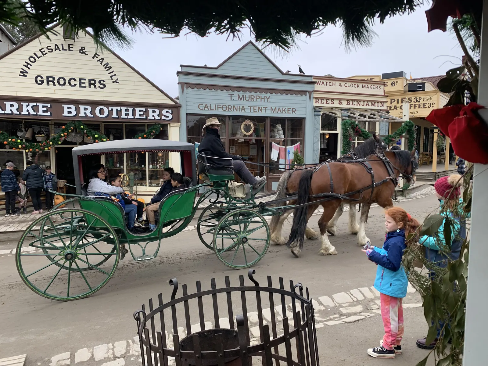
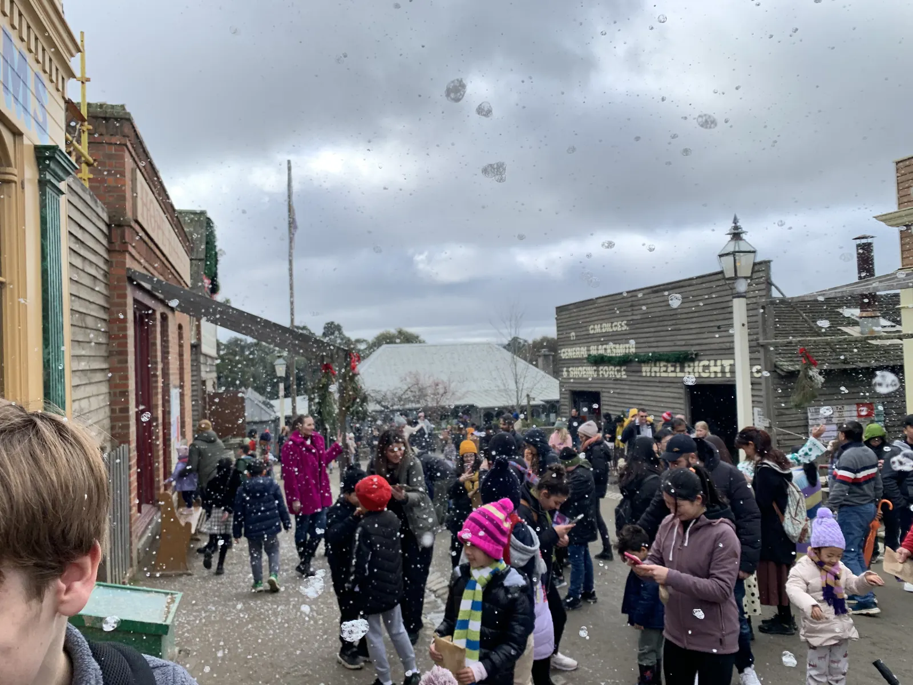
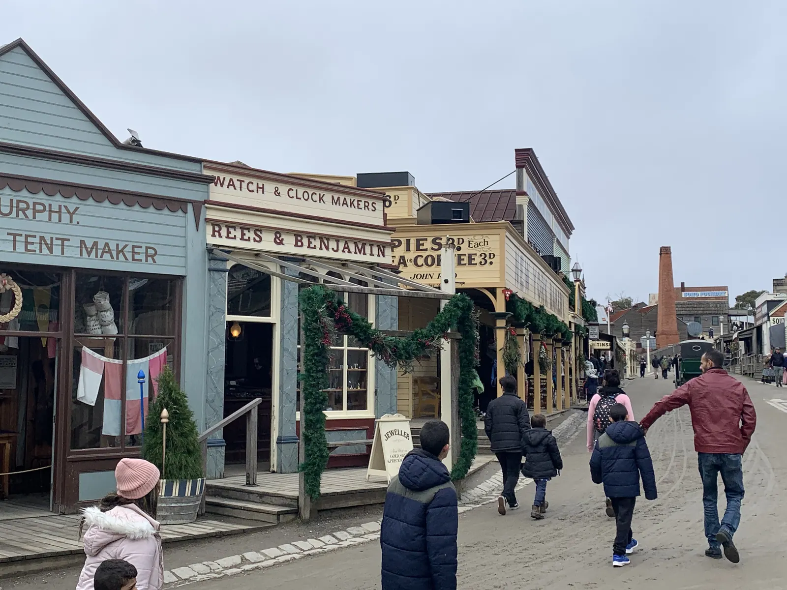
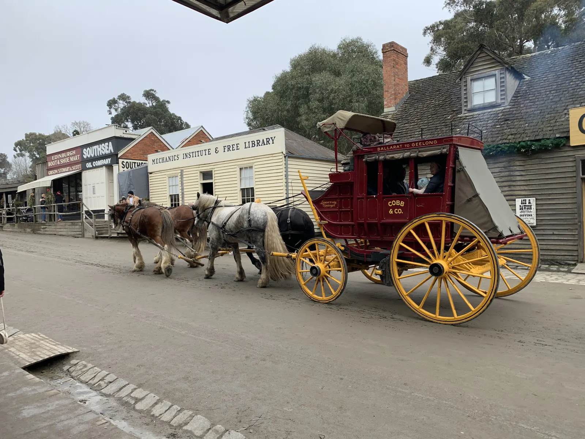
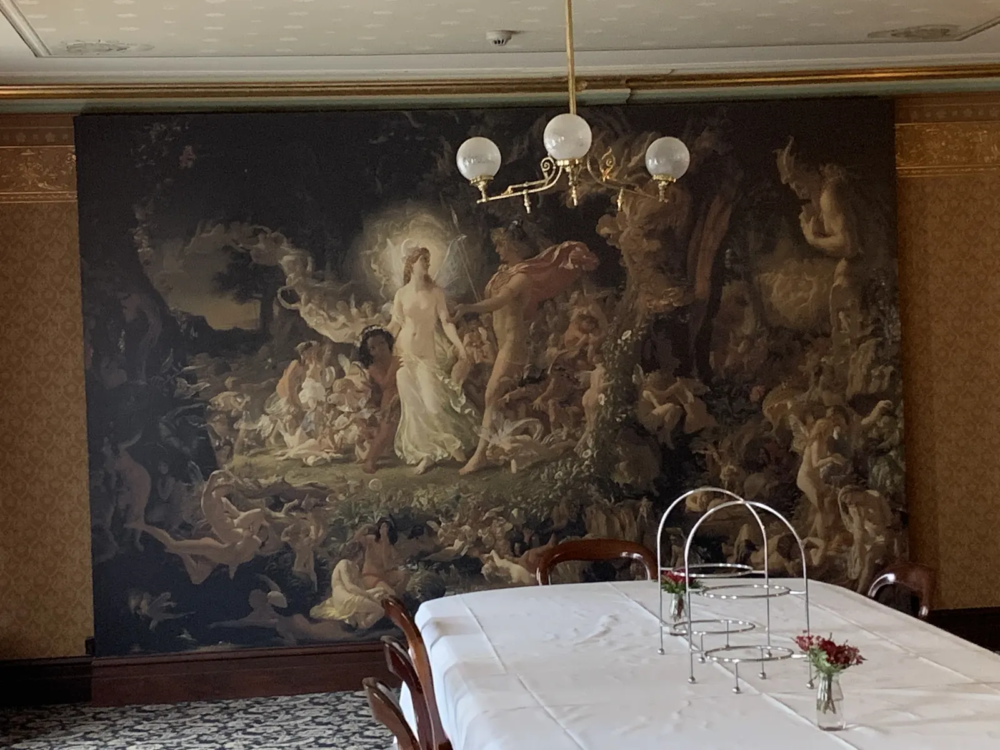
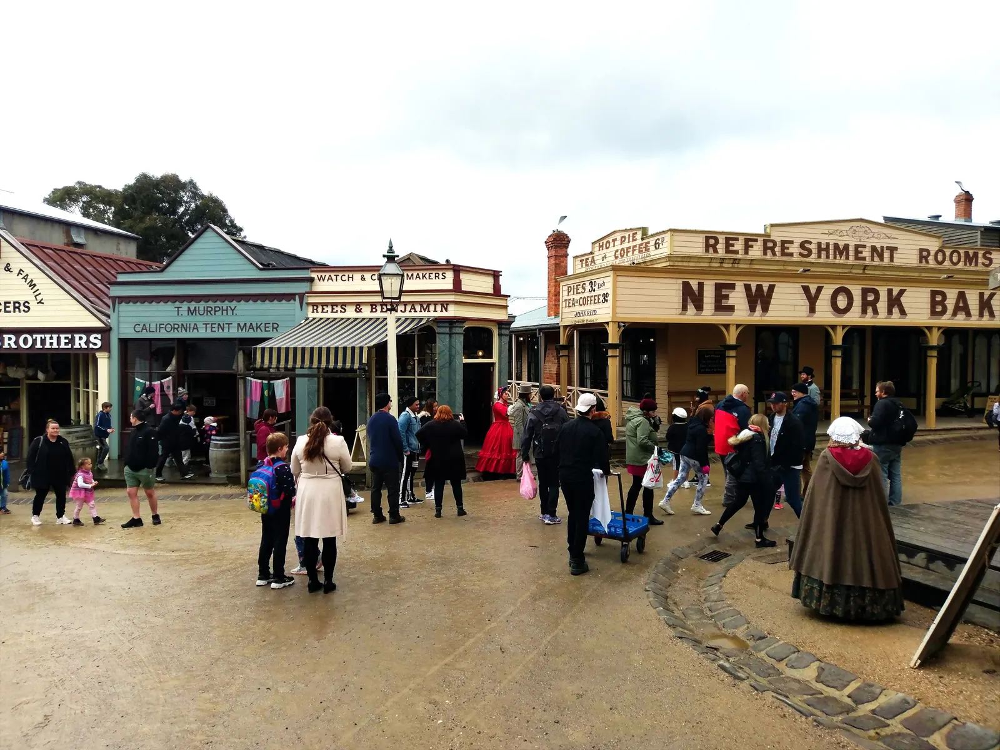
The Victorian theatre
Getting out of the cold and into the theatre was one of the highlights. The room has a chandelier, a painted ceiling, red velvet curtains and a curved balcony, and we watched a pirate-themed show from up in the gallery.
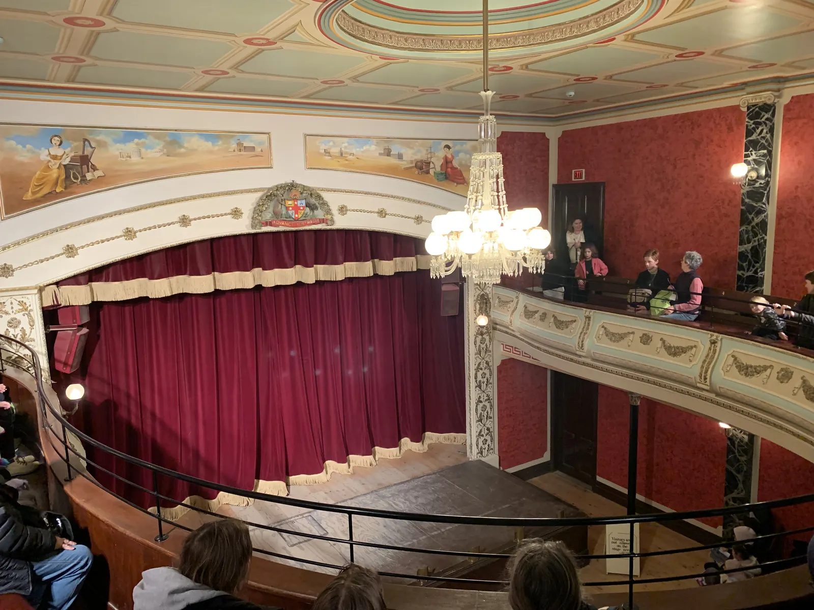
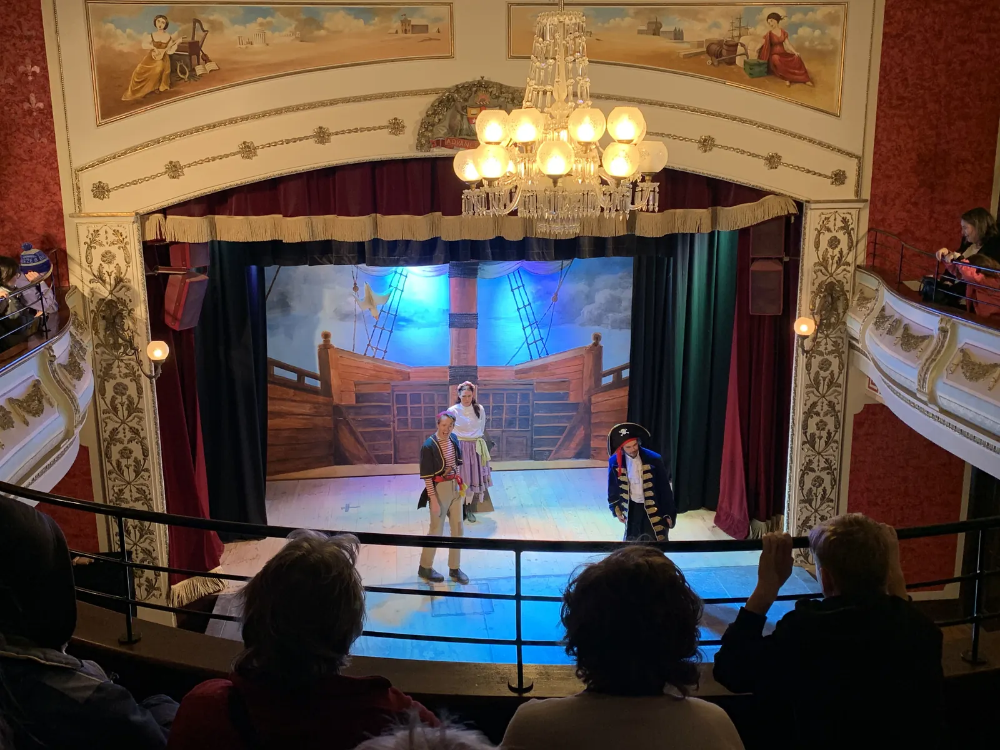
Grand rooms and small details
Some of the interiors are worth slowing down for: a formal dining room with a huge painted mural, and a parlour with a piano and patterned carpet that feels like the family has only just stepped out.
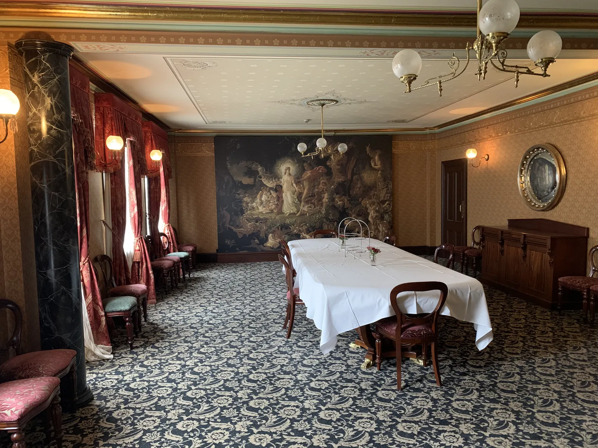
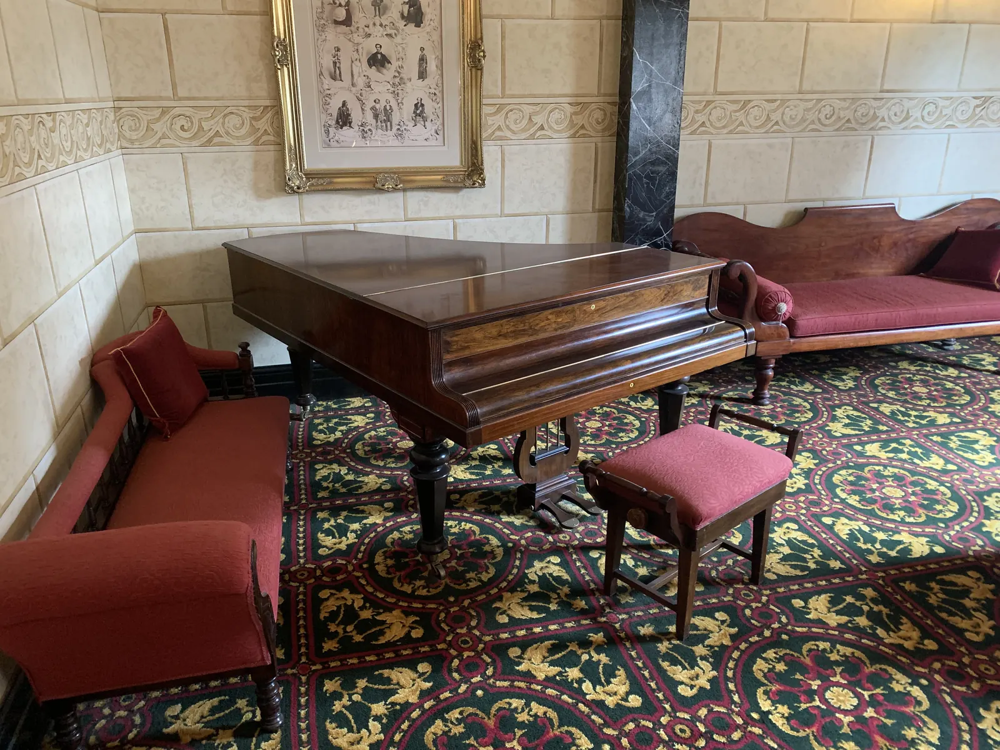
Gold panning and going underground
Gold panning in the creek is simple, a bit muddy and very absorbing. Swirling the pan and waiting for something to glint at the bottom is the kind of slow, patient activity that holds attention without a screen in sight.
The underground mine tour takes you into the tunnels, where the miners' story is told with light and projection in the dark. It gives you a feel for how hard and dangerous the work was, and it's well worth doing.
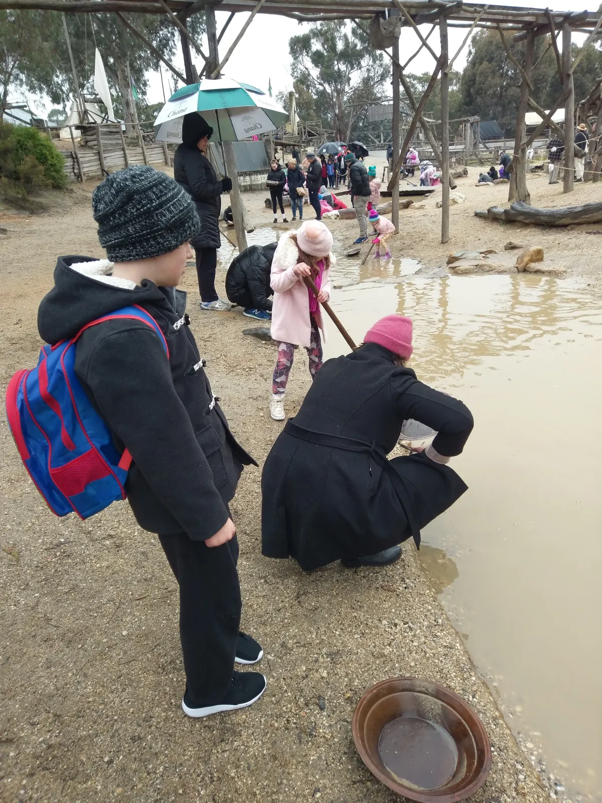
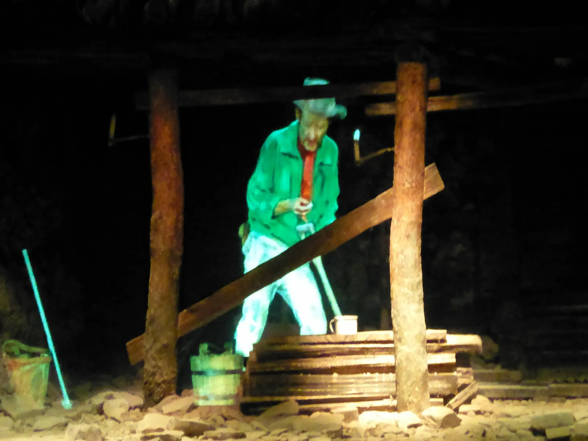
Gardens, animals and the edges of town
Away from the busy main street there are quieter spots: gardens with autumn colour still hanging on, and chickens wandering about the yards behind the cottages. These were good places to slow the pace for a few minutes.
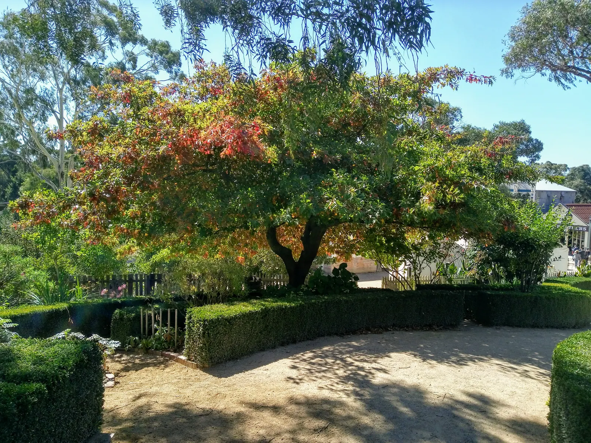
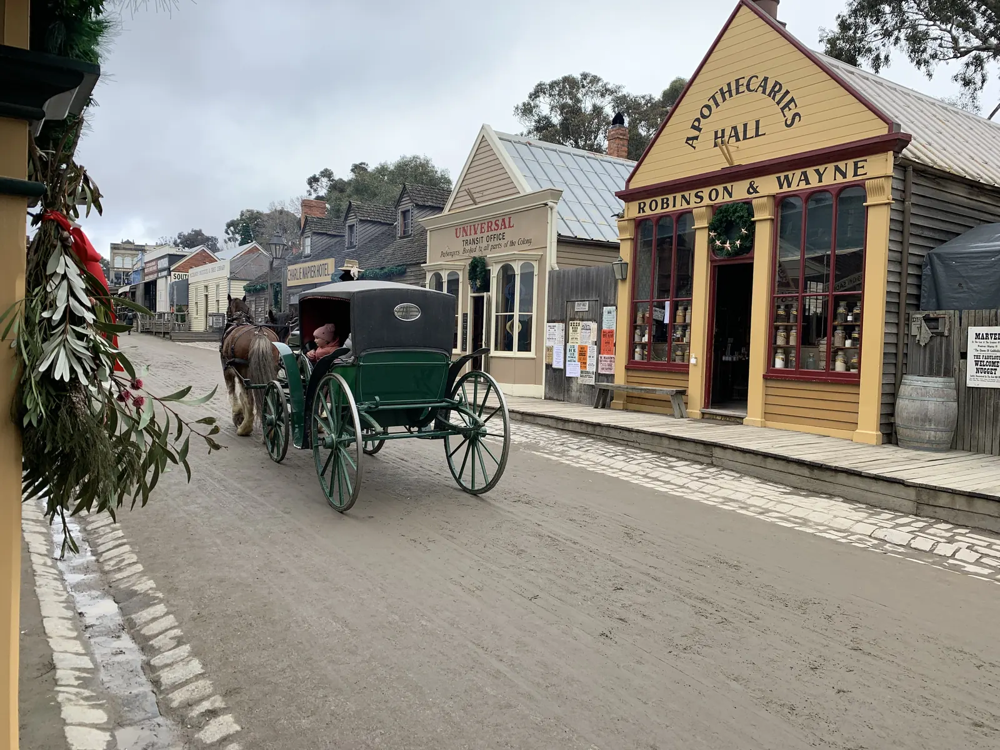
Why a day like this is good for you
LifeBuiltWell is about eating well, moving well and living grounded, and a day like this quietly covers all three. You walk for hours without noticing. You spend the day together instead of side by side on screens. And you get a reminder of how hard people worked to build the towns we now take for granted, which leaves you more grateful for ordinary comforts.
Tips for visiting Sovereign Hill in winter
- Dress for the cold. Ballarat in July is cold and often damp. Beanies, gloves and waterproof shoes make a big difference.
- Allow a full day. There's more to see than you expect, and you'll enjoy it more if you aren't rushing.
- Check the day's timetable when you arrive. Theatre shows, coach rides and mine tours run at set times, so plan your day around the ones you most want to see.
- Do the mine tour and the gold panning. They were the most hands-on parts of the day.
- Use the indoor spots to warm up. The theatre and the grand rooms are a good break from the weather.
- Check the official Sovereign Hill website before you go for current tickets, opening hours and seasonal events like Christmas in July.
All photos on this page are our own, taken on the day.